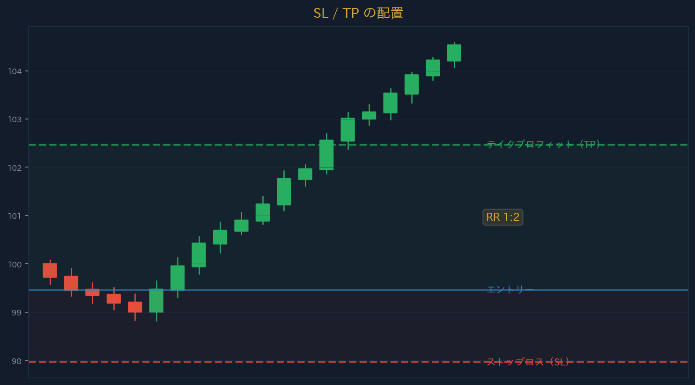

← Back
Section 28 — SLとTP戦略
←
1 / 5
→
SECTION 28
SLとTP戦略
Stop Loss & Take Profit Strategies
URIKAI Trading Academy
SLの種類・TP戦略・トレーリング
構造ベースSL
（S/R外側）が最も合理的。
ATR×1.5-2.0
で検証
TP戦略
：S/Rベース、フィボエクステンション、部分決済＋トレーリング
トレーリング
：固定pip/ATR/構造/MAトレール
SLを不利な方向に動かすのは
絶対禁止
推奨：TP1（S/R）で50%決済＋残りをトレーリング
POINT：SLは「根拠が崩れるポイント」に置く。損失額から逆算して場所を決めてはいけない。

SL＆TP | URIKAI Trading Academy
まとめ
SL
構造ベース＋ATRで検証、不利移動は絶対禁止
TP
S/R・フィボ・部分決済＋トレーリング
トレーリング
ATR/構造/MAトレール
鉄則
SLは根拠崩壊ポイントに置く
SL＆TP | URIKAI Trading Academy
確認テスト ── 3問正解で受講完了
Q1. ATRベースのSLの計算は？
ATR × 1.5〜2.0
ATR × 0.1
Q2. SLを不利な方向に動かすことは？
有効な戦略
絶対にしてはならない鉄則違反
Q3. 部分決済の目的は？
全利益を確保する
利益を確保しつつ残りを伸ばす
回答を確定する
SLとTP戦略 | URIKAI Trading Academy
Section 28 Complete
Next → ドローダウン管理
Home
URIKAI Trading Academy
← → キーでページ移動